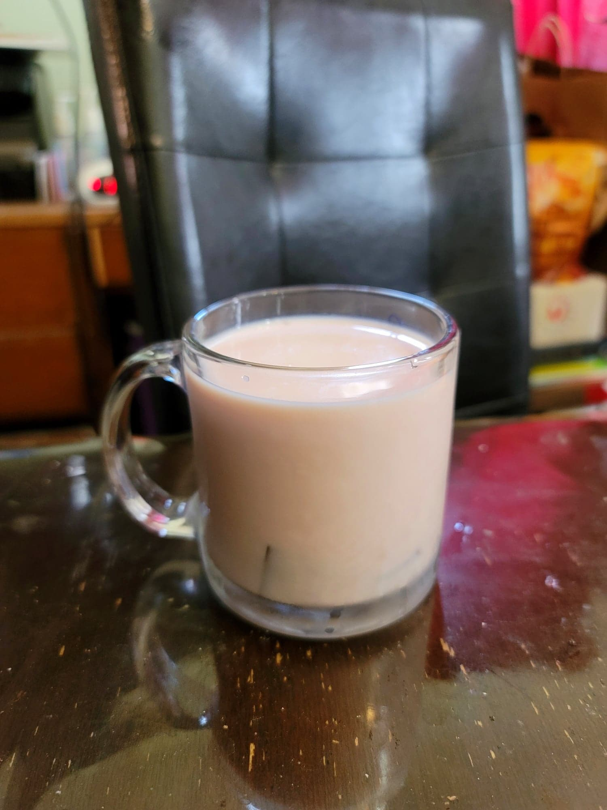

Rose Milk

Ingredients:
Milk
Rose syrup
, to taste
Optional:
Rose jelly
Optional: Tukmaria seeds, soaked for 20 minutes
Instructions:
Stir together the milk and rose syrup in a glass until well combined. Top with rose jelly and/or tukmaria seeds if desired. Serve cold.